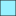

<!doctype html>
<html lang="en">
    <head>
        <meta charset="utf-8">
        <meta http-equiv="X-UA-Compatible" content="IE=edge">
        <meta name="viewport" content="initial-scale=1,user-scalable=no,maximum-scale=1,width=device-width">
        <meta name="mobile-web-app-capable" content="yes">
        <meta name="apple-mobile-web-app-capable" content="yes">
        <link rel="stylesheet" href="css/leaflet.css"><link rel="stylesheet" href="css/L.Control.Locate.min.css">
        <link rel="stylesheet" href="css/qgis2web.css"><link rel="stylesheet" href="css/fontawesome-all.min.css">
        <link rel="stylesheet" href="css/leaflet-search.css">
        <style>
        html, body, #map {
            width: 100%;
            height: 100%;
            padding: 0;
            margin: 0;
        }
        </style>
        <title></title>
    </head>
    <body>
        <div id="map">
        </div>
        <script src="js/qgis2web_expressions.js"></script>
        <script src="js/leaflet.js"></script><script src="js/L.Control.Locate.min.js"></script>
        <script src="js/leaflet.rotatedMarker.js"></script>
        <script src="js/leaflet.pattern.js"></script>
        <script src="js/leaflet-hash.js"></script>
        <script src="js/Autolinker.min.js"></script>
        <script src="js/rbush.min.js"></script>
        <script src="js/labelgun.min.js"></script>
        <script src="js/labels.js"></script>
        <script src="js/leaflet-search.js"></script>
        <script src="data/waterpumpstation_1.js"></script>
        <script src="data/Bankkokk_2.js"></script>
        <script src="data/waterpumpstation_3.js"></script>
        <script>
        var highlightLayer;
        function highlightFeature(e) {
            highlightLayer = e.target;

            if (e.target.feature.geometry.type === 'LineString') {
              highlightLayer.setStyle({
                color: '#ffff00',
              });
            } else {
              highlightLayer.setStyle({
                fillColor: '#ffff00',
                fillOpacity: 1
              });
            }
        }
        var map = L.map('map', {
            zoomControl:true, maxZoom:22, minZoom:1
        }).fitBounds([[13.512182679137444,100.35585408836933],[13.895092610184983,101.08727442278818]]);
        var hash = new L.Hash(map);
        map.attributionControl.setPrefix('<a href="https://github.com/tomchadwin/qgis2web" target="_blank">qgis2web</a> &middot; <a href="https://leafletjs.com" title="A JS library for interactive maps">Leaflet</a> &middot; <a href="https://qgis.org">QGIS</a>');
        var autolinker = new Autolinker({truncate: {length: 30, location: 'smart'}});
        function removeEmptyRowsFromPopupContent(content, feature) {
         var tempDiv = document.createElement('div');
         tempDiv.innerHTML = content;
         var rows = tempDiv.querySelectorAll('tr');
         for (var i = 0; i < rows.length; i++) {
             var td = rows[i].querySelector('td.visible-with-data');
             var key = td ? td.id : '';
             if (td && td.classList.contains('visible-with-data') && feature.properties[key] == null) {
                 rows[i].parentNode.removeChild(rows[i]);
             }
         }
         return tempDiv.innerHTML;
        }
        document.querySelector(".leaflet-popup-pane").addEventListener("load", function(event) {
          var tagName = event.target.tagName,
            popup = map._popup;
          // Also check if flag is already set.
          if (tagName === "IMG" && popup && !popup._updated) {
            popup._updated = true; // Set flag to prevent looping.
            popup.update();
          }
        }, true);
        L.control.locate({locateOptions: {maxZoom: 19}}).addTo(map);
        var bounds_group = new L.featureGroup([]);
        function setBounds() {
        }
        map.createPane('pane_OpenStreetMap_0');
        map.getPane('pane_OpenStreetMap_0').style.zIndex = 400;
        var layer_OpenStreetMap_0 = L.tileLayer('http://tile.openstreetmap.org/{z}/{x}/{y}.png', {
            pane: 'pane_OpenStreetMap_0',
            opacity: 1.0,
            attribution: '',
            minZoom: 1,
            maxZoom: 22,
            minNativeZoom: 0,
            maxNativeZoom: 18
        });
        layer_OpenStreetMap_0;
        map.addLayer(layer_OpenStreetMap_0);
        function pop_waterpumpstation_1(feature, layer) {
            layer.on({
                mouseout: function(e) {
                    for (i in e.target._eventParents) {
                        e.target._eventParents[i].resetStyle(e.target);
                    }
                },
                mouseover: highlightFeature,
            });
            var popupContent = '<table>\
                    <tr>\
                        <td colspan="2">' + (feature.properties['PUMP_ID'] !== null ? autolinker.link(feature.properties['PUMP_ID'].toLocaleString()) : '') + '</td>\
                    </tr>\
                    <tr>\
                        <td colspan="2">' + (feature.properties['PUMP_NAME'] !== null ? autolinker.link(feature.properties['PUMP_NAME'].toLocaleString()) : '') + '</td>\
                    </tr>\
                    <tr>\
                        <td colspan="2">' + (feature.properties['CANAL_NAME'] !== null ? autolinker.link(feature.properties['CANAL_NAME'].toLocaleString()) : '') + '</td>\
                    </tr>\
                    <tr>\
                        <td colspan="2">' + (feature.properties['PUMP_NUM'] !== null ? autolinker.link(feature.properties['PUMP_NUM'].toLocaleString()) : '') + '</td>\
                    </tr>\
                    <tr>\
                        <td colspan="2">' + (feature.properties['GP_CAPACITY'] !== null ? autolinker.link(feature.properties['GP_CAPACITY'].toLocaleString()) : '') + '</td>\
                    </tr>\
                    <tr>\
                        <td colspan="2">' + (feature.properties['REMARK'] !== null ? autolinker.link(feature.properties['REMARK'].toLocaleString()) : '') + '</td>\
                    </tr>\
                    <tr>\
                        <td colspan="2">' + (feature.properties['DCODE'] !== null ? autolinker.link(feature.properties['DCODE'].toLocaleString()) : '') + '</td>\
                    </tr>\
                    <tr>\
                        <td colspan="2">' + (feature.properties['SCODE'] !== null ? autolinker.link(feature.properties['SCODE'].toLocaleString()) : '') + '</td>\
                    </tr>\
                    <tr>\
                        <td colspan="2">' + (feature.properties['COOR_X'] !== null ? autolinker.link(feature.properties['COOR_X'].toLocaleString()) : '') + '</td>\
                    </tr>\
                    <tr>\
                        <td colspan="2">' + (feature.properties['COOR_Y'] !== null ? autolinker.link(feature.properties['COOR_Y'].toLocaleString()) : '') + '</td>\
                    </tr>\
                </table>';
            layer.bindPopup(popupContent, {maxHeight: 400});
            var popup = layer.getPopup();
            var content = popup.getContent();
            var updatedContent = removeEmptyRowsFromPopupContent(content, feature);
            popup.setContent(updatedContent);
        }

        function style_waterpumpstation_1_0() {
            return {
                pane: 'pane_waterpumpstation_1',
                radius: 8.0,
                opacity: 1,
                color: 'rgba(61,128,53,1.0)',
                dashArray: '',
                lineCap: 'butt',
                lineJoin: 'miter',
                weight: 2.0,
                fill: true,
                fillOpacity: 1,
                fillColor: 'rgba(84,176,74,1.0)',
                interactive: true,
            }
        }
        map.createPane('pane_waterpumpstation_1');
        map.getPane('pane_waterpumpstation_1').style.zIndex = 401;
        map.getPane('pane_waterpumpstation_1').style['mix-blend-mode'] = 'normal';
        var layer_waterpumpstation_1 = new L.geoJson(json_waterpumpstation_1, {
            attribution: '',
            interactive: true,
            dataVar: 'json_waterpumpstation_1',
            layerName: 'layer_waterpumpstation_1',
            pane: 'pane_waterpumpstation_1',
            onEachFeature: pop_waterpumpstation_1,
            pointToLayer: function (feature, latlng) {
                var context = {
                    feature: feature,
                    variables: {}
                };
                return L.circleMarker(latlng, style_waterpumpstation_1_0(feature));
            },
        });
        bounds_group.addLayer(layer_waterpumpstation_1);
        map.addLayer(layer_waterpumpstation_1);
        function pop_Bankkokk_2(feature, layer) {
            layer.on({
                mouseout: function(e) {
                    for (i in e.target._eventParents) {
                        e.target._eventParents[i].resetStyle(e.target);
                    }
                },
                mouseover: highlightFeature,
            });
            var popupContent = '<table>\
                    <tr>\
                        <td colspan="2">' + (feature.properties['AMP_CODE'] !== null ? autolinker.link(feature.properties['AMP_CODE'].toLocaleString()) : '') + '</td>\
                    </tr>\
                    <tr>\
                        <td colspan="2">' + (feature.properties['PRV_CODE'] !== null ? autolinker.link(feature.properties['PRV_CODE'].toLocaleString()) : '') + '</td>\
                    </tr>\
                    <tr>\
                        <td colspan="2">' + (feature.properties['AMP_NAME_T'] !== null ? autolinker.link(feature.properties['AMP_NAME_T'].toLocaleString()) : '') + '</td>\
                    </tr>\
                    <tr>\
                        <td colspan="2">' + (feature.properties['AMP_NAME_E'] !== null ? autolinker.link(feature.properties['AMP_NAME_E'].toLocaleString()) : '') + '</td>\
                    </tr>\
                    <tr>\
                        <td colspan="2">' + (feature.properties['Shape_Leng'] !== null ? autolinker.link(feature.properties['Shape_Leng'].toLocaleString()) : '') + '</td>\
                    </tr>\
                    <tr>\
                        <td colspan="2">' + (feature.properties['Shape_Area'] !== null ? autolinker.link(feature.properties['Shape_Area'].toLocaleString()) : '') + '</td>\
                    </tr>\
                    <tr>\
                        <td colspan="2">' + (feature.properties['TH_Provinc'] !== null ? autolinker.link(feature.properties['TH_Provinc'].toLocaleString()) : '') + '</td>\
                    </tr>\
                    <tr>\
                        <td colspan="2">' + (feature.properties['TH_Provi_1'] !== null ? autolinker.link(feature.properties['TH_Provi_1'].toLocaleString()) : '') + '</td>\
                    </tr>\
                </table>';
            layer.bindPopup(popupContent, {maxHeight: 400});
            var popup = layer.getPopup();
            var content = popup.getContent();
            var updatedContent = removeEmptyRowsFromPopupContent(content, feature);
            popup.setContent(updatedContent);
        }

        function style_Bankkokk_2_0() {
            return {
                pane: 'pane_Bankkokk_2',
                opacity: 1,
                color: 'rgba(35,35,35,1.0)',
                dashArray: '',
                lineCap: 'butt',
                lineJoin: 'miter',
                weight: 1.0, 
                fill: true,
                fillOpacity: 1,
                fillColor: 'rgba(152,241,255,1.0)',
                interactive: false,
            }
        }
        map.createPane('pane_Bankkokk_2');
        map.getPane('pane_Bankkokk_2').style.zIndex = 402;
        map.getPane('pane_Bankkokk_2').style['mix-blend-mode'] = 'normal';
        var layer_Bankkokk_2 = new L.geoJson(json_Bankkokk_2, {
            attribution: '',
            interactive: false,
            dataVar: 'json_Bankkokk_2',
            layerName: 'layer_Bankkokk_2',
            pane: 'pane_Bankkokk_2',
            onEachFeature: pop_Bankkokk_2,
            style: style_Bankkokk_2_0,
        });
        bounds_group.addLayer(layer_Bankkokk_2);
        map.addLayer(layer_Bankkokk_2);
        function pop_waterpumpstation_3(feature, layer) {
            layer.on({
                mouseout: function(e) {
                    for (i in e.target._eventParents) {
                        e.target._eventParents[i].resetStyle(e.target);
                    }
                },
                mouseover: highlightFeature,
            });
            var popupContent = '<table>\
                    <tr>\
                        <th scope="row">PUMP_ID</th>\
                        <td>' + (feature.properties['PUMP_ID'] !== null ? autolinker.link(feature.properties['PUMP_ID'].toLocaleString()) : '') + '</td>\
                    </tr>\
                    <tr>\
                        <th scope="row">PUMP_NAME</th>\
                        <td>' + (feature.properties['PUMP_NAME'] !== null ? autolinker.link(feature.properties['PUMP_NAME'].toLocaleString()) : '') + '</td>\
                    </tr>\
                    <tr>\
                        <th scope="row">CANAL_NAME</th>\
                        <td>' + (feature.properties['CANAL_NAME'] !== null ? autolinker.link(feature.properties['CANAL_NAME'].toLocaleString()) : '') + '</td>\
                    </tr>\
                    <tr>\
                        <th scope="row">PUMP_NUM</th>\
                        <td>' + (feature.properties['PUMP_NUM'] !== null ? autolinker.link(feature.properties['PUMP_NUM'].toLocaleString()) : '') + '</td>\
                    </tr>\
                    <tr>\
                        <th scope="row">GP_CAPACITY</th>\
                        <td>' + (feature.properties['GP_CAPACITY'] !== null ? autolinker.link(feature.properties['GP_CAPACITY'].toLocaleString()) : '') + '</td>\
                    </tr>\
                    <tr>\
                        <th scope="row">REMARK</th>\
                        <td>' + (feature.properties['REMARK'] !== null ? autolinker.link(feature.properties['REMARK'].toLocaleString()) : '') + '</td>\
                    </tr>\
                    <tr>\
                        <th scope="row">DCODE</th>\
                        <td>' + (feature.properties['DCODE'] !== null ? autolinker.link(feature.properties['DCODE'].toLocaleString()) : '') + '</td>\
                    </tr>\
                    <tr>\
                        <th scope="row">SCODE</th>\
                        <td>' + (feature.properties['SCODE'] !== null ? autolinker.link(feature.properties['SCODE'].toLocaleString()) : '') + '</td>\
                    </tr>\
                    <tr>\
                        <th scope="row">COOR_X</th>\
                        <td>' + (feature.properties['COOR_X'] !== null ? autolinker.link(feature.properties['COOR_X'].toLocaleString()) : '') + '</td>\
                    </tr>\
                    <tr>\
                        <th scope="row">COOR_Y</th>\
                        <td>' + (feature.properties['COOR_Y'] !== null ? autolinker.link(feature.properties['COOR_Y'].toLocaleString()) : '') + '</td>\
                    </tr>\
                </table>';
            layer.bindPopup(popupContent, {maxHeight: 400});
            var popup = layer.getPopup();
            var content = popup.getContent();
            var updatedContent = removeEmptyRowsFromPopupContent(content, feature);
            popup.setContent(updatedContent);
        }

        function style_waterpumpstation_3_0() {
            return {
                pane: 'pane_waterpumpstation_3',
                radius: 8.0,
                opacity: 1,
                color: 'rgba(61,128,53,1.0)',
                dashArray: '',
                lineCap: 'butt',
                lineJoin: 'miter',
                weight: 2.0,
                fill: true,
                fillOpacity: 1,
                fillColor: 'rgba(84,176,74,1.0)',
                interactive: true,
            }
        }
        map.createPane('pane_waterpumpstation_3');
        map.getPane('pane_waterpumpstation_3').style.zIndex = 403;
        map.getPane('pane_waterpumpstation_3').style['mix-blend-mode'] = 'normal';
        var layer_waterpumpstation_3 = new L.geoJson(json_waterpumpstation_3, {
            attribution: '',
            interactive: true,
            dataVar: 'json_waterpumpstation_3',
            layerName: 'layer_waterpumpstation_3',
            pane: 'pane_waterpumpstation_3',
            onEachFeature: pop_waterpumpstation_3,
            pointToLayer: function (feature, latlng) {
                var context = {
                    feature: feature,
                    variables: {}
                };
                return L.circleMarker(latlng, style_waterpumpstation_3_0(feature));
            },
        });
        bounds_group.addLayer(layer_waterpumpstation_3);
        map.addLayer(layer_waterpumpstation_3);
        var baseMaps = {};
        L.control.layers(baseMaps,{' water-pump-station': layer_waterpumpstation_3,' Bankkokk': layer_Bankkokk_2,' water-pump-station': layer_waterpumpstation_1,"OpenStreetMap": layer_OpenStreetMap_0,}).addTo(map);
        setBounds();
        var i = 0;
        layer_Bankkokk_2.eachLayer(function(layer) {
            var context = {
                feature: layer.feature,
                variables: {}
            };
            layer.bindTooltip((layer.feature.properties['AMP_NAME_T'] !== null?String('<div style="color: #323232; font-size: 10pt; font-family: \'Open Sans\', sans-serif;">' + layer.feature.properties['AMP_NAME_T']) + '</div>':''), {permanent: true, offset: [-0, -16], className: 'css_Bankkokk_2'});
            labels.push(layer);
            totalMarkers += 1;
              layer.added = true;
              addLabel(layer, i);
              i++;
        });
        map.addControl(new L.Control.Search({
            layer: layer_waterpumpstation_1,
            initial: false,
            hideMarkerOnCollapse: true,
            propertyName: 'PUMP_NAME'}));
        document.getElementsByClassName('search-button')[0].className +=
         ' fa fa-binoculars';
        resetLabels([layer_Bankkokk_2,layer_waterpumpstation_3]);
        map.on("zoomend", function(){
            resetLabels([layer_Bankkokk_2,layer_waterpumpstation_3]);
        });
        map.on("layeradd", function(){
            resetLabels([layer_Bankkokk_2,layer_waterpumpstation_3]);
        });
        map.on("layerremove", function(){
            resetLabels([layer_Bankkokk_2,layer_waterpumpstation_3]);
        });
        </script>
    </body>
</html>
